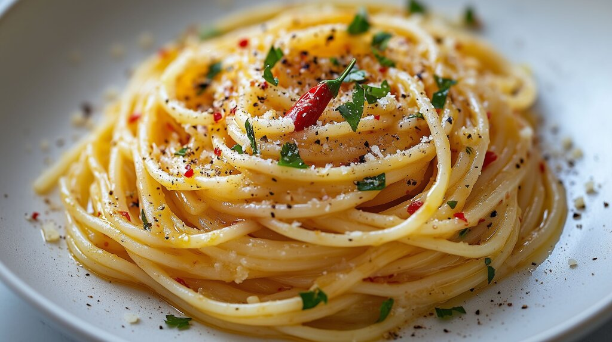
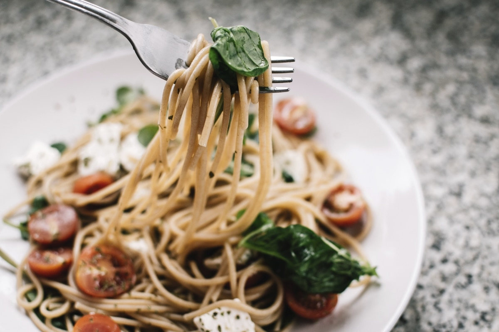
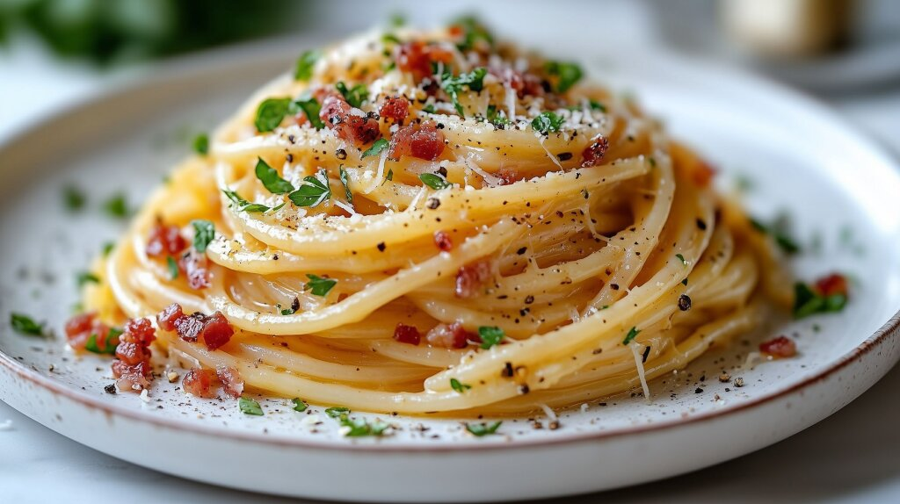

Home
Spaghetti



Description
This recipe has been handed down from my mother. It is a family favorite and will not be replaced!
Ingredients
- 1 medium onion
- 4 cloves garlic
- 1 small green bell pepper
- 1 can diced tomatoes
- 1 can tomato sauce
- 1 can tomato paste
- 2 teaspoons dried oregano
- 2 teaspoons dried basil
- 1 teaspoons salt
- 1 teaspoons ground black pepper
Steps
- Gather all Ingredients
- Combine ground beef, onion, garlic, and green pepper in a large saucepan over medium-high heat. Cook and stir until meat is browned and crumbly and vegetables are tender, 5 to 7 minutes. Drain grease.
- Stir diced tomatoes, tomato sauce, and tomato paste into the pan. Season with oregano, basil, salt, and pepper. Simmer spaghetti sauce for 1 hour, stirring occasionally.
- Serve hot and enjoy!